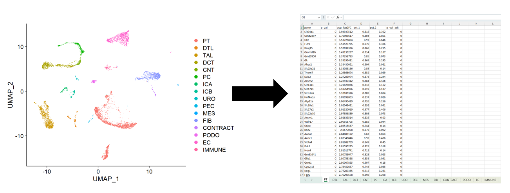
Introduction
This tutorial is designed to help you write the DEGs that define each
cluster in your Seurat object to an excel file. This is a very useful
step in the analysis process because often times, this is the output
that gets shared with collaborators and submitted as supplemental
material to journal articles upon publishing an snRNAseq dataset.
Download .RMD file for step-by-step analysis
These files are on google drive
.Rmd is for running in RStudio
Write DEG Lists to Excel
Open the RMD file and load the packages
Important Packages are here,
seurat, dplyr, and
openxlsx
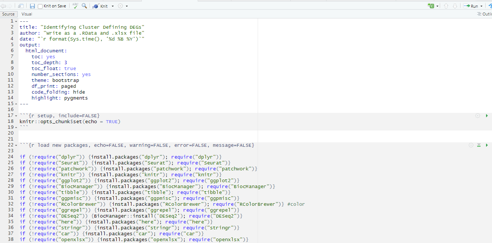
Step 1: Set the active identity of the object
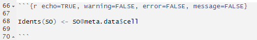
Step 2: Collect the names of the clusters
This is a list of the clusters that is automaticaly generated from
seurat object
Super Important to record the level of the object
to write the spreadsheet in the order you
want
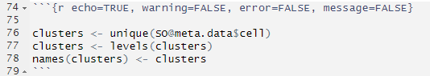
After running this step the environment should have the names of the
clusters in the correct order
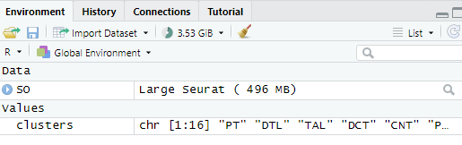
Step 3: Create a new environment to stash the DEG
lists
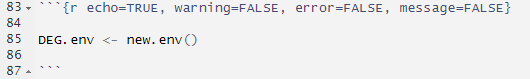
After running this code you should see a new
environment in the environment tab
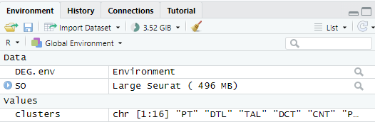
Step 4: Loop through each cluster and creating DEG
for each population
Creates DEG list
Filter on p_val_adj < 0.05
Orders DEG list by log2FC
Save DEG list into special environment
Prints out top 10 DEG list
Save DEG lists into a .RData file
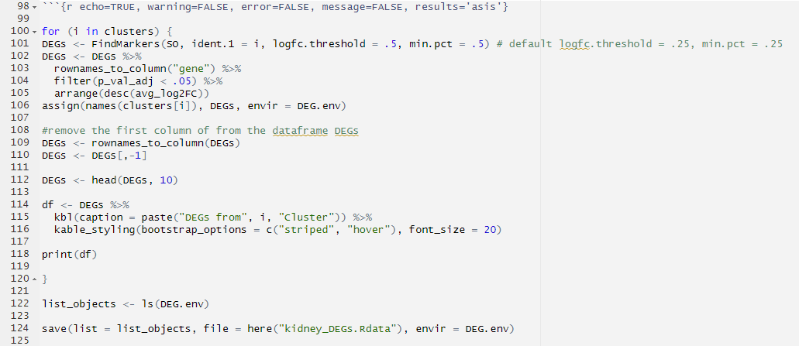
After running this code you should see the DEG
lists in the env
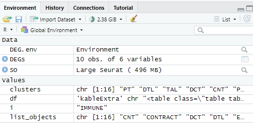
If you click on the DEG.env you should see the DEG lists in
alphabetical order
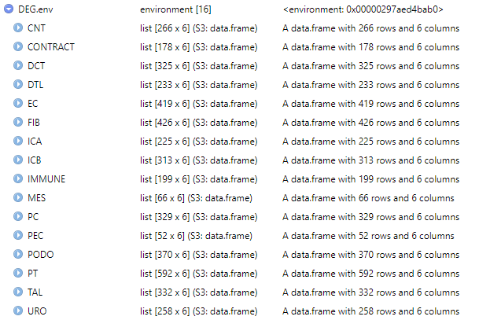
Step 5: Write DEGs to Excel
Grab the list of DEGs from the special enviroment
Set the order to write the DEGs (otherwise alphabetical)
Write the excel file (using openxlsx package)
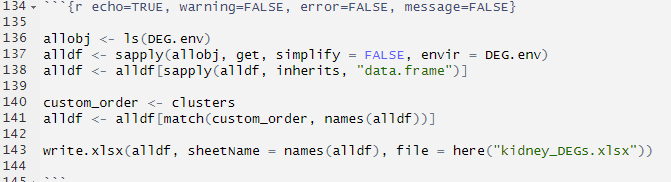
After running this code the envornment should look like this
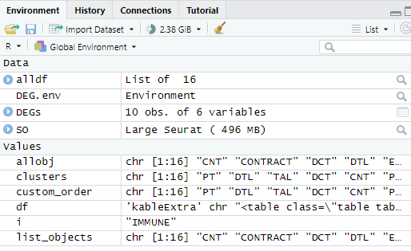
The .Rdata, and .xlsx files should be where here()
is
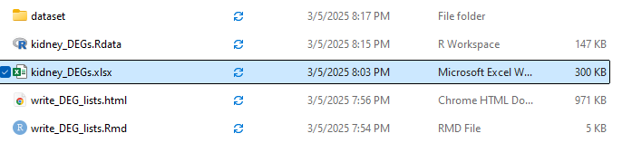
You should have an excel file with DEGs listed as
separate tabs in the order of the clusters
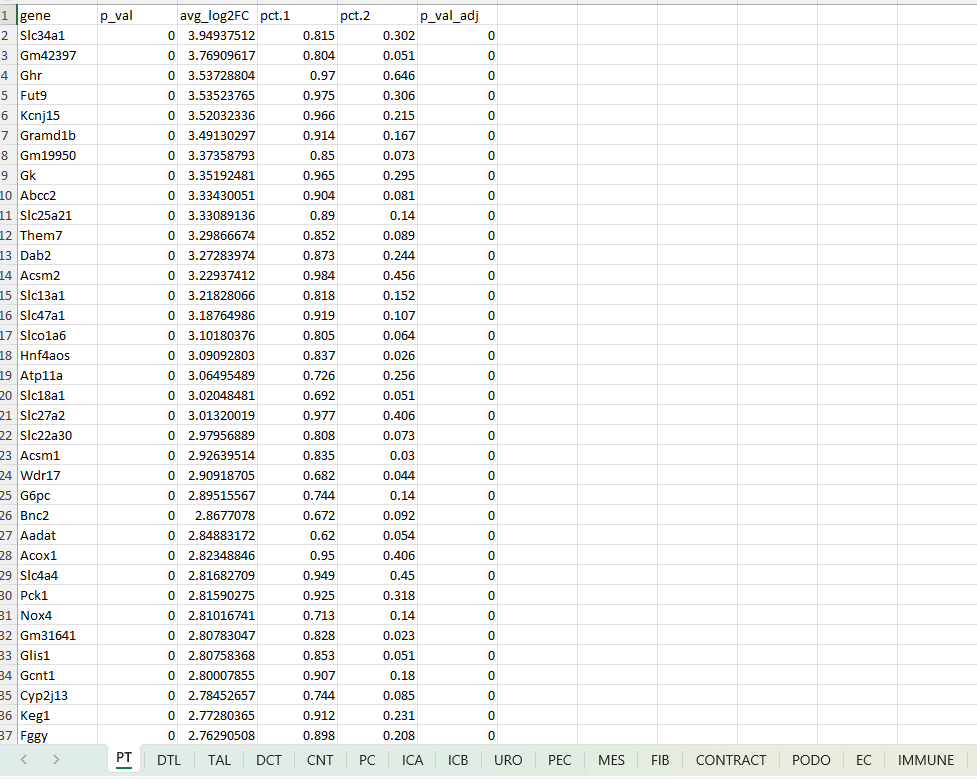